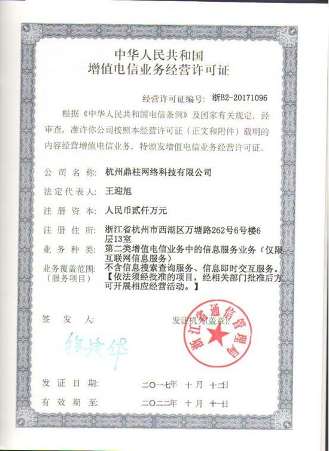

兰致胜理财荣获 “ICP经营许可证”证书，加速合规进程
新浪网时间：2017-11-21
近日，兰致胜理财成功斩获ICP经营许可证，充分展现了平台稳健运营的能力及风控能力。兰致胜理财隶属于杭州兰胜网络科技有限公司，平台于2017年10月10日正式上线，是一家专业从事互联网金融信息中介服务的平台，具有专业的管理团队，成熟完善的风控管理体系。

兰致胜理财平台致力于通过以互联网科技驱动金融创新，为全国有借款需求和投资需求的个人或企业，提供高效、便捷的投融资服务，从而实现打造专业理财平台，成为优质个人理财顾问的愿景。
根据中华人民共和国国务院令第291号《中华人民共和国电信条例》、第292条《互联网信息服务管理办法》，经营性网站必须办理ICP证，办理ICP证是企业网站合法经营的必需品，由各地通信管理部门核发。
作为互联网金融的参与者，兰致胜理财服从监管，秉承“诚信公平共赢”的理念，专注于质押理财服务，以为客户提供优质服务为己任，在确保客户资金安全的前提下，实现客户收益最大化。
兰致胜理财以实现个人财富自由和财富增长为使命，志在打造专业的理财平台，成为个人优质理财顾问。平台成立伊始，便服从监管坚持合法化建设，利用自身技术优势分别从资金安全、账户安全、平台安全、数据安全四大方面保障用户的资金数据安全。
在平台保障上，兰致胜理财紧随全球金融一体化与信息技术创新发展的步伐，引入银行级风险管理模式，不断深挖”互联网金融+第三方资产+科学合理配置”的模式，专注于供应链相关的金融精品业务，去除中间环节，用专业风控及多重保障，为投资人提供专业、透明、便捷、灵活的理财产品和服务，帮助广大用户实现财富增值。
凭借四大安全保障和安全合法的平台服务，兰致胜理财获得了ICP许可证，被广大用户朋友们认可。在前行的道路上，兰致胜理财将努力打造一个安全、透明、高效的网络平台，在政府部门的监管之下，让老百姓使用上更为优质的金融服务。